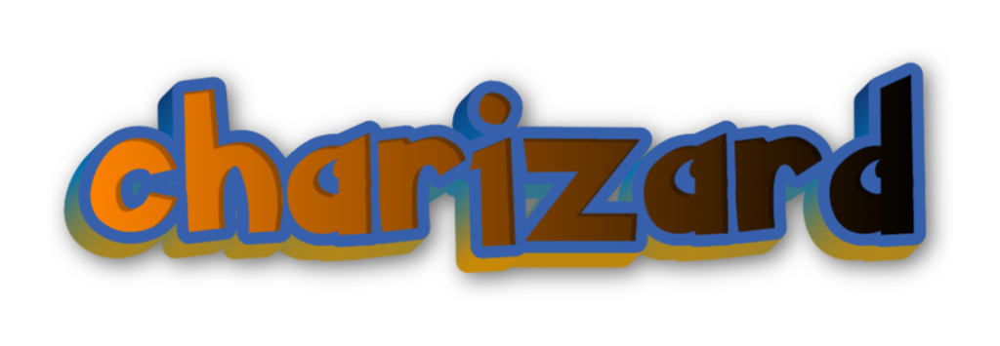
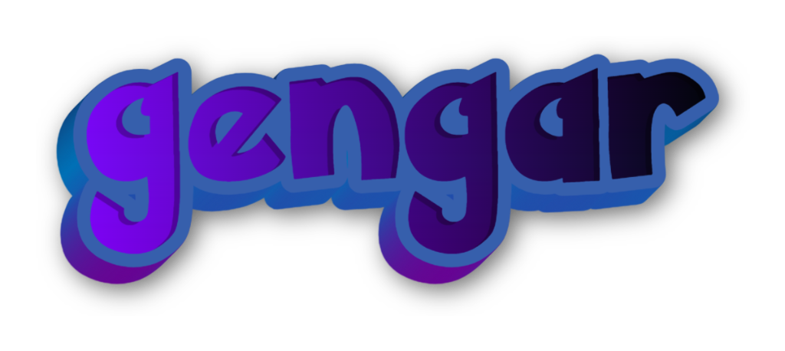
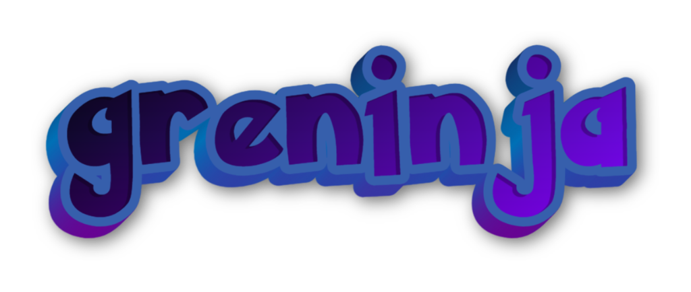
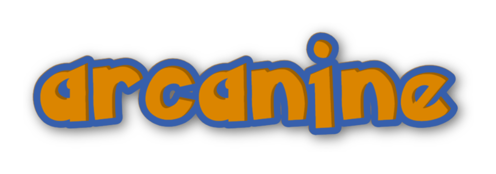
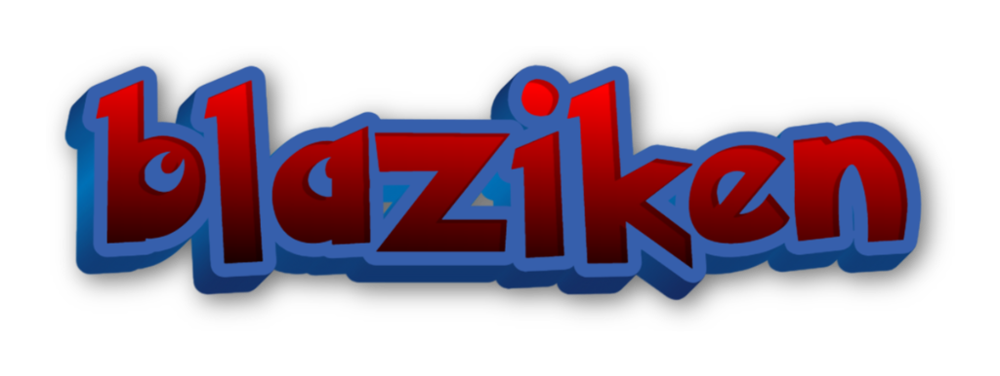
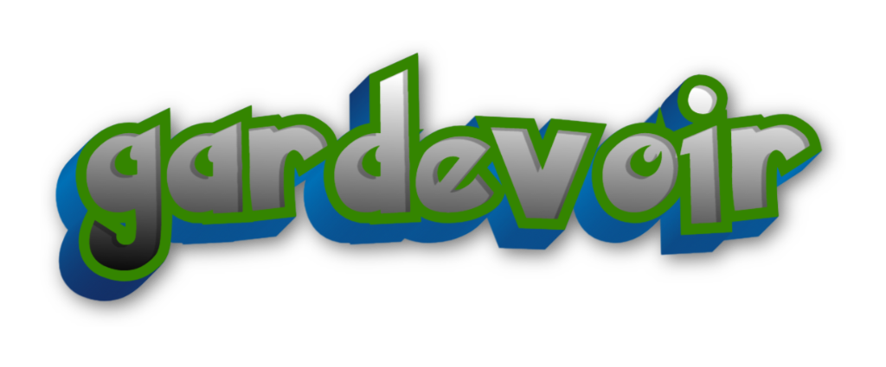

--- LUCARIO, Lutador e Aço, usa a Aura para ataques e prever movimentos. Apesar de sua velocidade, é fraco contra Lutador, Fogo e Terrestre.

PIKACHU, um Elétrico, usa Choque do Trovão. Forte contra Água/Voador, fraco contra Terra, menos eficaz em Dragão/Venenoso/Elétrico. Pode paralisar.

CHARIZARD, Fogo/Voador, é um ícone da Geração 1, sem tipo Dragão na forma base. Suas Mega Evoluções e Gigantamax adicionam o tipo Dragão e movimentos exclusivos. .

GENGAR, Fantasma/Venenoso, da Geração 1. É veloz, ataca especial, e tem Mega Evolução/Gigantamax com G-Max Terror.

GRENINJA, Água/Sombrio da Geração 6. É extremamente veloz e imprevisível devido à habilidade Mutagolpe.

ARCANINE, Fogo, evolui com Pedra do Fogo. Rápido, com Intimidate/Flash Fire, usa Flamethrower. Forma de Hisui: Fogo/Pedra.
UMBREON, Noturno e evolução de Eevee por amizade, é focado em defesa e resistência. Usa ataques como Foul Play e reflete condições de status com Synchronize, sendo popular pelo seu visual misterioso.
BULBASAUR, inicial de Kanto, é Planta/Venenoso. Leal, tem Chlorophyll (sol aumenta velocidade) e Overgrow (Planta mais forte com pouca vida).

BLAZIKEN, Fogo/Lutador de Hoenn, é rápido e forte. Com Speed Boost, eleva a velocidade e é um combatente potente.

GARDEVOIR, Psíquico/Fada, é ligada ao treinador. Oferece suporte e ataque forte, com Trace copiando habilidades. Sua Mega Evolução amplia beleza e poder.